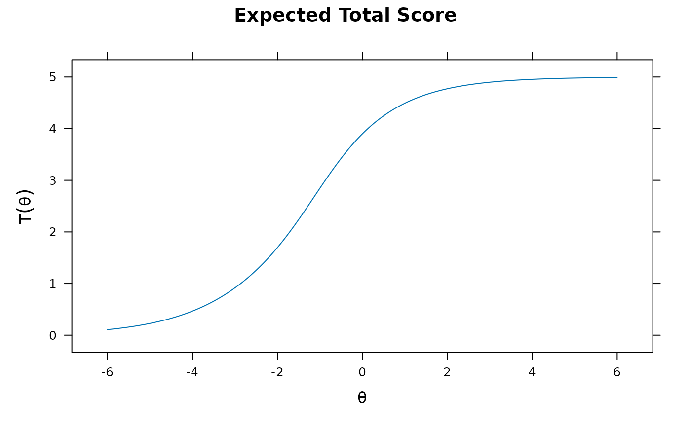

Initializes the proper S4 class and methods necessary for mirt functions to use in estimation.
To use the defined objects pass to the mirt(..., customItems = list()) command, and
ensure that the classes are properly labeled and unique in the list. Additionally,
the input mirt(..., customItemsData = list()) can also be included to specify additional
item-level information to better recycle custom-item defintions (e.g., for supplying varying
Q-matricies), where the list input must have the same length as the number of items.
For further examples regarding how this function can be used for
fitting unfolding-type models see Liu and Chalmers (2018).
createItem( name, par, est, P, gr = NULL, hss = NULL, gen = NULL, lbound = NULL, ubound = NULL, derivType = "Richardson", derivType.hss = "Richardson", bytecompile = TRUE )
| name | a character indicating the item class name to be defined |
|---|---|
| par | a named vector of the starting values for the parameters |
| est | a logical vector indicating which parameters should be freely estimated by default |
| P | the probability trace function for all categories (first column is category 1, second
category two, etc). First input contains a vector of all the item parameters, the second input
must be a matrix called
or
to be valid; however, the names of the arguements is not relavent. Finally, this function must return a |
| gr | gradient function (vector of first derivatives) of the log-likelihood used in
estimation. The function must be of the form |
| hss | Hessian function (matrix of second derivatives) of the log-likelihood used in
estimation. If not specified a numeric approximation will be used (required for the MH-RM
algorithm only). The input is identical to the |
| gen | a function used when |
| lbound | optional vector indicating the lower bounds of the parameters. If not specified then the bounds will be set to -Inf |
| ubound | optional vector indicating the lower bounds of the parameters. If not specified then the bounds will be set to Inf |
| derivType | if the |
| derivType.hss | if the |
| bytecompile | logical; where applicable, byte compile the functions provided? Default is
|
The summary() function will not return proper standardized loadings since the function
is not sure how to handle them (no slopes could be defined at all!). Instead loadings of .001
are filled in as place-holders.
Chalmers, R., P. (2012). mirt: A Multidimensional Item Response Theory Package for the R Environment. Journal of Statistical Software, 48(6), 1-29. doi: 10.18637/jss.v048.i06
Liu, C.-W. and Chalmers, R. P. (2018). Fitting item response unfolding models to Likert-scale data using mirt in R. PLoS ONE, 13, 5. doi: 10.1371/journal.pone.0196292
Phil Chalmers rphilip.chalmers@gmail.com
# \donttest{ name <- 'old2PL' par <- c(a = .5, b = -2) est <- c(TRUE, TRUE) P.old2PL <- function(par,Theta, ncat){ a <- par[1] b <- par[2] P1 <- 1 / (1 + exp(-1*a*(Theta - b))) cbind(1-P1, P1) } x <- createItem(name, par=par, est=est, P=P.old2PL) #So, let's estimate it! dat <- expand.table(LSAT7) sv <- mirt(dat, 1, c(rep('2PL',4), 'old2PL'), customItems=list(old2PL=x), pars = 'values') tail(sv) #looks good#> group item class name parnum value lbound ubound est prior.type #> 15 all Item.4 dich g 15 0.0 0e+00 1 FALSE none #> 16 all Item.4 dich u 16 1.0 0e+00 1 FALSE none #> 17 all Item.5 custom a 17 0.5 -Inf Inf TRUE none #> 18 all Item.5 custom b 18 -2.0 -Inf Inf TRUE none #> 19 all GROUP GroupPars MEAN_1 19 0.0 -Inf Inf FALSE none #> 20 all GROUP GroupPars COV_11 20 1.0 1e-04 Inf FALSE none #> prior_1 prior_2 #> 15 NaN NaN #> 16 NaN NaN #> 17 NaN NaN #> 18 NaN NaN #> 19 NaN NaN #> 20 NaN NaN#> $Item.1 #> a1 d g u #> par 0.989 1.856 0 1 #> #> $Item.2 #> a1 d g u #> par 1.081 0.808 0 1 #> #> $Item.3 #> a1 d g u #> par 1.703 1.803 0 1 #> #> $Item.4 #> a1 d g u #> par 0.766 0.486 0 1 #> #> $Item.5 #> a b #> par 0.737 -2.518 #> #> $GroupPars #> MEAN_1 COV_11 #> par 0 1 #>mod2 <- mirt(dat, 1, c(rep('2PL',4), 'old2PL'), customItems=list(old2PL=x), method = 'MHRM') coef(mod2)#> $Item.1 #> a1 d g u #> par 0.965 1.842 0 1 #> #> $Item.2 #> a1 d g u #> par 1.093 0.809 0 1 #> #> $Item.3 #> a1 d g u #> par 1.747 1.822 0 1 #> #> $Item.4 #> a1 d g u #> par 0.779 0.487 0 1 #> #> $Item.5 #> a b #> par 0.752 -2.474 #> #> $GroupPars #> MEAN_1 COV_11 #> par 0 1 #># same definition as above, but using symbolic derivative computations # (can be more accurate/stable) xs <- createItem(name, par=par, est=est, P=P.old2PL, derivType = 'symbolic') mod <- mirt(dat, 1, c(rep('2PL',4), 'old2PL'), customItems=list(old2PL=xs)) coef(mod, simplify=TRUE)#> $items #> a1 d g u a b #> Item.1 0.989 1.856 0 1 NA NA #> Item.2 1.081 0.808 0 1 NA NA #> Item.3 1.703 1.803 0 1 NA NA #> Item.4 0.766 0.486 0 1 NA NA #> Item.5 NA NA NA NA 0.737 -2.518 #> #> $means #> F1 #> 0 #> #> $cov #> F1 #> F1 1 #>#> M2 df p RMSEA RMSEA_5 RMSEA_95 #> stats 11.93609 5 0.03567406 0.03726401 0.008942493 0.06496201#> item S_X2 df.S_X2 RMSEA.S_X2 p.S_X2 #> 1 Item.1 4.750 2 0.037 0.093 #> 2 Item.2 14.441 2 0.079 0.001 #> 3 Item.3 1.266 2 0.000 0.531 #> 4 Item.4 5.241 2 0.040 0.073 #> 5 Item.5 0.941 2 0.000 0.625#> #> Method: EAP #> #> Empirical Reliability: #> #> F1 #> 0.4521#> Item.1 Item.2 Item.3 Item.4 Item.5 F1 SE_F1 #> [1,] 0 0 0 0 0 -1.87007948 0.6927529 #> [2,] 0 0 0 0 1 -1.52697457 0.6737491 #> [3,] 0 0 0 1 0 -1.51392586 0.6732172 #> [4,] 0 0 0 1 1 -1.18482102 0.6653857 #> [5,] 0 0 1 0 0 -1.09593641 0.6652478 #> [6,] 0 0 1 0 1 -0.76739318 0.6723304 #> [7,] 0 0 1 1 0 -0.75437903 0.6728509 #> [8,] 0 0 1 1 1 -0.41205976 0.6923718 #> [9,] 0 1 0 0 0 -1.37206898 0.6684824 #> [10,] 0 1 0 0 1 -1.04523454 0.6655627 #> [11,] 0 1 0 1 0 -1.03248856 0.6656869 #> [12,] 0 1 0 1 1 -0.70236227 0.6751047 #> [13,] 0 1 1 0 0 -0.61021097 0.6797568 #> [14,] 0 1 1 0 1 -0.25834218 0.7042678 #> [15,] 0 1 1 1 0 -0.24404926 0.7054537 #> [16,] 0 1 1 1 1 0.14056373 0.7410799 #> [17,] 1 0 0 0 0 -1.41337188 0.6696576 #> [18,] 1 0 0 0 1 -1.08608846 0.6652865 #> [19,] 1 0 0 1 0 -1.07335417 0.6653526 #> [20,] 1 0 0 1 1 -0.74429905 0.6732661 #> [21,] 1 0 1 0 0 -0.65270293 0.6775093 #> [22,] 1 0 1 0 1 -0.30386571 0.7005763 #> [23,] 1 0 1 1 0 -0.28972318 0.7017088 #> [24,] 1 0 1 1 1 0.09023055 0.7361045 #> [25,] 1 1 0 0 0 -0.93341707 0.6672696 #> [26,] 1 1 0 0 1 -0.59992074 0.6803267 #> [27,] 1 1 0 1 0 -0.58659076 0.6810796 #> [28,] 1 1 0 1 1 -0.23296102 0.7063823 #> [29,] 1 1 1 0 0 -0.13150552 0.7152007 #> [30,] 1 1 1 0 1 0.26515650 0.7536331 #> [31,] 1 1 1 1 0 0.28153206 0.7553020 #> [32,] 1 1 1 1 1 0.72728504 0.8009587# fit the same model, but specify gradient function explicitly (use of a browser() may be helpful) gr <- function(x, Theta){ # browser() a <- x@par[1] b <- x@par[2] P <- probtrace(x, Theta) PQ <- apply(P, 1, prod) r_P <- x@dat / P grad <- numeric(2) grad[2] <- sum(-a * PQ * (r_P[,2] - r_P[,1])) grad[1] <- sum((Theta - b) * PQ * (r_P[,2] - r_P[,1])) ## check with internal numerical form to be safe # numerical_deriv(mirt:::EML, x@par[x@est], obj=x, Theta=Theta) grad } x <- createItem(name, par=par, est=est, P=P.old2PL, gr=gr) mod <- mirt(dat, 1, c(rep('2PL',4), 'old2PL'), customItems=list(old2PL=x)) coef(mod, simplify=TRUE)#> $items #> a1 d g u a b #> Item.1 0.989 1.856 0 1 NA NA #> Item.2 1.081 0.808 0 1 NA NA #> Item.3 1.703 1.803 0 1 NA NA #> Item.4 0.766 0.486 0 1 NA NA #> Item.5 NA NA NA NA 0.737 -2.518 #> #> $means #> F1 #> 0 #> #> $cov #> F1 #> F1 1 #>###non-linear name <- 'nonlin' par <- c(a1 = .5, a2 = .1, d = 0) est <- c(TRUE, TRUE, TRUE) P.nonlin <- function(par,Theta, ncat=2){ a1 <- par[1] a2 <- par[2] d <- par[3] P1 <- 1 / (1 + exp(-1*(a1*Theta + a2*Theta^2 + d))) cbind(1-P1, P1) } x2 <- createItem(name, par=par, est=est, P=P.nonlin) mod <- mirt(dat, 1, c(rep('2PL',4), 'nonlin'), customItems=list(nonlin=x2)) coef(mod)#> $Item.1 #> a1 d g u #> par 0.984 1.854 0 1 #> #> $Item.2 #> a1 d g u #> par 1.087 0.809 0 1 #> #> $Item.3 #> a1 d g u #> par 1.705 1.803 0 1 #> #> $Item.4 #> a1 d g u #> par 0.762 0.486 0 1 #> #> $Item.5 #> a1 a2 d #> par 0.806 0.065 1.818 #> #> $GroupPars #> MEAN_1 COV_11 #> par 0 1 #>###nominal response model (Bock 1972 version) Tnom.dev <- function(ncat) { T <- matrix(1/ncat, ncat, ncat - 1) diag(T[-1, ]) <- diag(T[-1, ]) - 1 return(T) } name <- 'nom' par <- c(alp=c(3,0,-3),gam=rep(.4,3)) est <- rep(TRUE, length(par)) P.nom <- function(par, Theta, ncat){ alp <- par[1:(ncat-1)] gam <- par[ncat:length(par)] a <- Tnom.dev(ncat) %*% alp c <- Tnom.dev(ncat) %*% gam z <- matrix(0, nrow(Theta), ncat) for(i in 1:ncat) z[,i] <- a[i] * Theta + c[i] P <- exp(z) / rowSums(exp(z)) P } nom1 <- createItem(name, par=par, est=est, P=P.nom) nommod <- mirt(Science, 1, 'nom1', customItems=list(nom1=nom1)) coef(nommod)#> $Comfort #> alp1 alp2 alp3 gam1 gam2 gam3 #> par -1.554 -2.016 -3.027 -3.642 -5.908 -4.535 #> #> $Work #> alp1 alp2 alp3 gam1 gam2 gam3 #> par -0.578 -1.26 -2.522 -1.463 -2.325 -0.324 #> #> $Future #> alp1 alp2 alp3 gam1 gam2 gam3 #> par -1.539 -3.763 -6.076 -3.645 -5.832 -3.921 #> #> $Benefit #> alp1 alp2 alp3 gam1 gam2 gam3 #> par -0.809 -1.361 -2.342 -2.147 -2.914 -1.623 #> #> $GroupPars #> MEAN_1 COV_11 #> par 0 1 #>#> [,1] #> [1,] -1.64933825 #> [2,] -0.09546626 #> [3,] 0.36682569 #> [4,] 1.37797882#> [,1] #> [1,] -3.5211137 #> [2,] 0.1204555 #> [3,] 2.3871031 #> [4,] 1.0135552# }